Volume Rendering¶
{kind=link}
Activating Volume rendering.
Volume rendering is a method for rendering light as it passes through participating media, within a 3D region. The implementation in Blender a physically-based model, which represents the various interactions of light in a volume relatively realistically.
Volume rendering.
Rendering a volume is different from Solid Render. For volume light enters a 3D region of space (defined as the volume) that may be filled with small particles, such as smoke, mist or clouds. The light bounces around off the various molecules, being scattered or absorbed, until some light passes through the volume and reaches the camera. In order for that volume to be visible, the renderer must figure out how much material the light has passed through and how it has acted and reacted within that volume, the volume object needs to contain a 3D region of space, for example a manifold closed mesh, such as a cube, not just a flat surface like a plane. To get an image, the renderer has to step through that region, and see how much 'stuff' is there (density) in order to see how light is absorbed or scattered or whatever. This can be a time-consuming process since it has to check a lot of points in space and evaluate the density at each.
Options¶
Density¶
Constant density vs textured density.
Many things can happen to the light as it passes through the volume, which will influence the final color that arrives at the camera. These represent physical interactions that happen in the real world, and most of these are dependent on the density of the volume, which can either be a constant density throughout, or varied, controlled by a texture. It is by controlling the density that one can get the typical 'volumetric' effects such as clouds or thick smoke.
- Density
- The base density of the material. Other densities from textures are added on top.
- Density Scale
- A global multiplier to increase or decrease the apparent density. This can be useful for getting consistent results across different scene scales.
Shading¶
Spot lamp scattering in a constant volume.
When light enters a volume from an external source, it does not just pass straight through. Light gets scattered off tiny particles in the volume, and some proportion of that light reaches the camera. This property makes it possible to see light beams as they travel though a volume and are scattered towards the eye.
Shading options.
- Scattering
- The amount of light that is scattered out of the volume. The more light that is scattered out of the volume, the less it will penetrate through the rest of the volume. Raising this parameter can have the effect of making the volume seem denser, as the light is scattered out quickly at the 'surface' of the volume, leaving the areas internal to the volume darker, as the light does not reach it.
Note in the examples below, the less light that is scattered out of the volume, the more easily it penetrates throughout the volume and to the shadow.
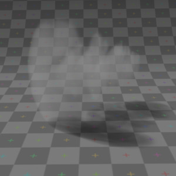
Scattering: 0.5. |
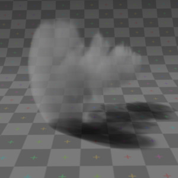
Scattering: 1.0. |
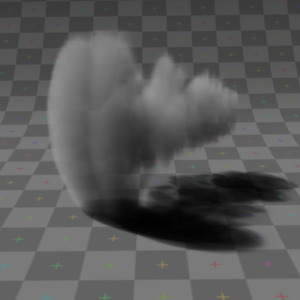
Scattering: 2.0. |
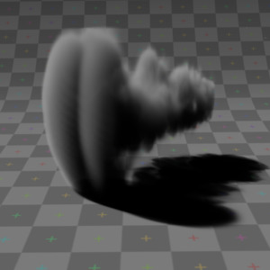
Scattering: 5.0. |
{kind=link}
{kind=link}
{kind=link}
{kind=link}
Asymmetry¶
{kind=link}
The default method for scattering light in a volume is for the light to be deflected evenly in all directions, also known as Isotropic scattering. In the real world different types of media can scatter light in different angular directions, known as Anisotropic scattering. Backscattering means that light is scattered more towards the incoming light direction, and forward scattering means it is scattered along the same direction as the light is traveling.
- Asymmetry
- Asymmetry controls the range between backscattering (-1.0) and forward scattering (1.0). The default value of 0.0 gives Isotropic scattering (even in all directions).
Transmission¶
Transmission is a general term for light that is transmitted throughout a volume.
This transmitted light can be the result of various different interactions, for example:
- The left over result of incoming light after it has reflected/scattered out of the volume.
- The left over result of light after being absorbed by the volume (and converted to heat).
Here, the transmission color is used to set the end result color that light becomes after it is transmitted through the volume.
- Transmission Color
- The resultant color of light that is transmitted through the volume.
Note in the examples below, as more light is scattered out of the volume, there is less available to be transmitted through.
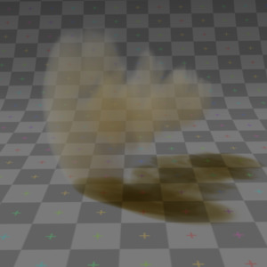
Transmission color: Yellow, Scattering: 0.5. |
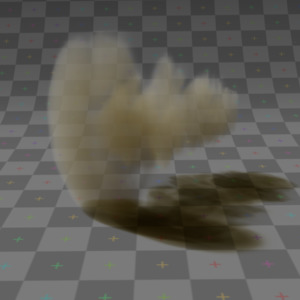
Transmission color: Yellow, Scattering: 1.0. |
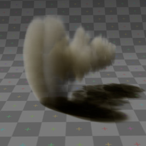
Transmission color: Yellow, Scattering: 2.0. |
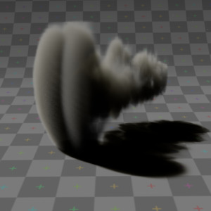
Transmission color: Yellow, Scattering: 5.0. |
{kind=link}
{kind=link}
{kind=link}
{kind=link}
Emission¶
Some volumes can emit light where there was none before, via chemical or thermal processes, such as fire. This light is generated from the volume itself and is independent of light coming from external sources.
Currently, this emitted light does not affect other volumes or surfaces (similar to surface material type, 'Emit' option).
- Emission Color
- The color of light that is emitted by the volume.
- Emission
- An intensity multiplier for the emitted color, for scaling up and down.
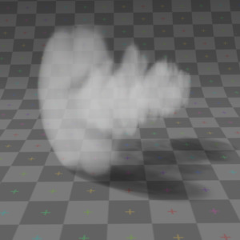
Emission 0.25, Scattering: 0.5. |
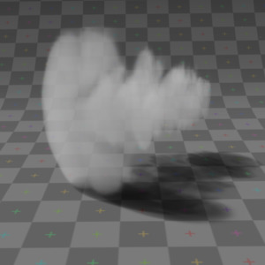
Emission 0.25, Scattering: 1.0. |
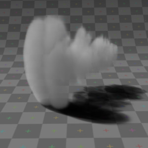
Emission 0.25, Scattering: 2.0. |
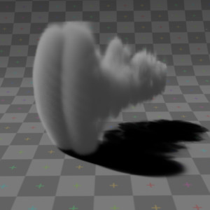
Emission 0.25, Scattering: 5.0. |
{kind=link}
{kind=link}
{kind=link}
{kind=link}
Reflection¶
The Reflection parameters can be used to tint or scale the light that is scattered out of the volume. This only affects light that has come from lamps and been scattered out, it does not affect the color of transmitted or emitted light and is.
These settings are not physically correct, because they do not conserve energy. This means the light scattering out does not affect the remaining light, that is transmitted throughout the rest of the volume.
For example, physically speaking, if the orange components of the light are scattered out of the volume towards the camera, only the inverse of that (blue) will remain to continue penetrating through the volume, causing the volume to take on a multi-colored appearance, which can be difficult to use. To make it a bit easier to plainly set the color of the volume, you can use the reflection parameters to quickly set an overall tint.
- Reflection Color
- The color of light that is scattered out of the volume.
- Reflection
- An intensity multiplier for the reflection, for scaling up and down.
Hints¶
Ideally try to accomplish as much as you can with the other volume settings and lighting before using the reflection controls. If you stick to what is physically plausible, the material will act correctly, and be more predictable and usable in a wider range of lighting scenarios. Of course you can always break the rules too!
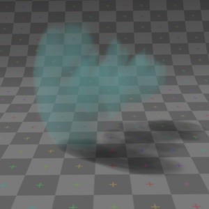
Reflection: Green, Scattering: 0.5. |
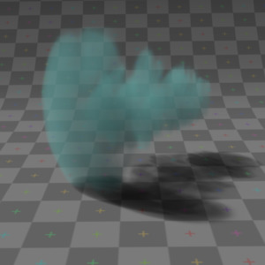
Reflection: Green, Scattering: 1.0. |
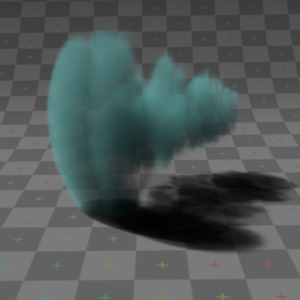
Reflection: Green, Scattering: 2.0. |
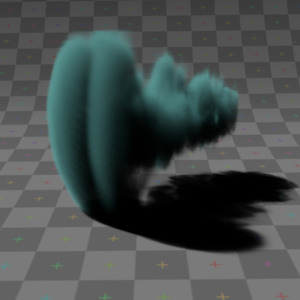
Reflection: Green, Scattering: 5.0. |
{kind=link}
{kind=link}
{kind=link}
{kind=link}
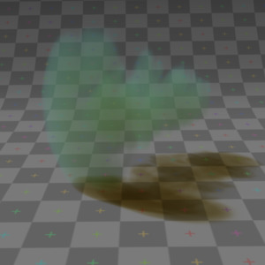
Reflection: Green, Transmission: Yellow, Scattering: 0.5. |
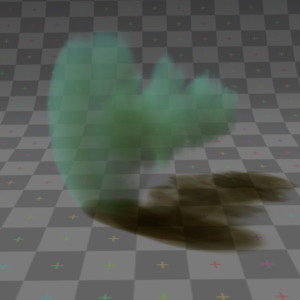
Reflection: Green, Transmission: Yellow, Scattering: 1.0. |
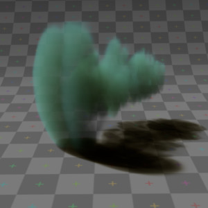
Reflection: Green, Transmission: Yellow, Scattering: 2.0. |
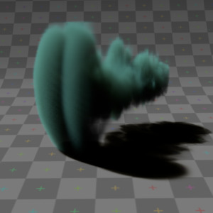
Reflection: Green, Transmission: Yellow, Scattering: 5.0. |
{kind=link}
{kind=link}
{kind=link}
{kind=link}
Lighting¶
Lighting options.
Several shading modes are available, providing a range of options between fast to render and physically accurate.
- Lighting Mode
- Shadeless
- Shadeless is the simplest, useful for thin, wispy mist or steam.
- Shadowed
- Shadowed is similar, but with shadows of external objects.
- Shaded
- Shaded uses a volumetric single-scattering method, for self-shading the volume as light penetrates through.
- Multiple Scattering
- Allows multiple scatter calculations.
- Shaded + Multiple Scattering
- Combines Shaded and Multiple Scattering functionality.
- Shaded Options
- External Shadows
- Receive shadows from sources outside the volume (temporary).
- Light Cache
- Pre-calculate the shading information into a voxel grid, speeds up shading at slightly less accuracy.
- Resolution
- Resolution of the voxel grid, low resolutions are faster, high resolutions use more memory.
- Multiple Scattering Options
- Diffusion
- Diffusion factor, the strength of the blurring effect.
- Spread
- Proportional distance over which the light is diffused.
- Intensity
- Multiplier for multiple scattered light energy.
Transparency¶
The transparency settings are the same as Solid Render except you have less settings. For volume rendering you only have:
- Mask
- Z Transparency
- Raytrace
Integration¶
Integration options.
- Step Calculation Method
Method of calculating the step through the volume.
- Randomized
- Randomized method of calculating the step.
- Constant
- Constant method of calculating the step.
- Step Size
- Distance between subsequent volume depth samples. Step Sizes determine how noisy the volume is. Higher values result in lower render times and higher noise.
- Depth Cutoff
- Stop ray marching early if transmission drops below this luminance threshold. Higher values will give a speedups in dense volumes at the expense of accuracy.
Options¶
Material volume options.
- Traceable
- Allow this material to calculate ray tracing.
- Full Oversample
- Force this material to render full shading/textures for all anti-aliasing samples.
- Use Mist
- Use mist with this material (in world settings).
- Light Group
- Limit lighting of this material to lamps in this group.
- Exclusive
- Material uses this group exclusively. Lamps are excluded from other scene lighting.
Smoke and Fire¶
Create the Material¶
The material must be a volumetric material with a Density of 0, and a high Density Scale.
{kind=link}
The material settings.
Smoke requires a complex material to render correctly. Select the big cube and go to the material tab. There change the material to 'Volume' and set the density to 0. If you set the density to values bigger than 0 the domain cube will be filled with the volume material. The other settings will affect the smoke, though.
Add the Texture¶
In addition, Smoke requires its own texture, you can use a volumetric texture known as Voxel Data. You must remember to set the domain object and change the influence.
The texture settings.
Go to the texture tab and change the type to Voxel Data. Under the Voxel Data-Settings set the domain object to our domain cube (it should be listed just as 'Cube' since we are using Blender's default cube). Under Influence check 'Density' and leave it at 1.000 (Emission should be automatically checked, too). Now you should be able to render single frames. You can choose to color your smoke as well, by turning Emission Color back on.
Finished result.
Mẹo
To see the smoke more clearly.
Under the world tab, choose a very dark color for the horizon.
Smoke Simulator with Fire Texture¶
You can also turn your smoke into fire with another texture! To make fire, turn up the Emission Value in the Materials panel.
{kind=link}
The fire material.
Then, add another texture (keep the old texture or the smoke will not show). Give it a fiery color ramp- which colors based on the alpha, and change the influence to emission and emission color. Change the blend to Multiply.
{kind=link}
The fire texture settings.
The fire render.